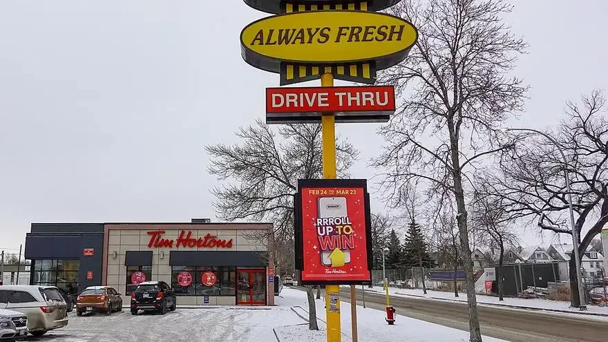

Unofficial fan guide - not affiliated with Tim Hortons
Coffee, donuts, breakfast, lunch, service and the Tims app, each rated against 2026 prices, plus why review sites score Tim Hortons so low.
Full Menu / Blog / Tim Hortons Review

Tim Hortons is worth it for cheap, fast coffee and a quick breakfast, but not for bakery-quality donuts or specialty espresso. A medium brewed coffee costs $1.83 in Canada. On review sites it averages about 2.2 out of 5, mostly because service varies so much from one location to the next.
Tim Hortons is good at being cheap, fast and everywhere, and it's average at almost everything else. With roughly 3,900 restaurants in Canada, it's the default stop for a coffee and a breakfast sandwich. It still wins on price and convenience. It no longer wins on how good the food tastes.
Tim Hortons scores 2.2 out of 5 on both Trustpilot and Yelp. The low scores come mostly from service problems, not from the menu itself. When we checked in September 2026, Trustpilot had 3,116 reviews, and 59% of them were one-star. Yelp had 11,144 reviews across 416 locations.
Those averages hide how split people are. 25% of Trustpilot reviewers still give five stars, and very few land in the middle. The one-star reviews repeat the same complaints: wrong orders, long drive-thru waits, cold breakfast sandwiches and app points that go missing. The five-star reviews usually praise one specific store and its staff. More than 95% of Tim Hortons restaurants are run by independent franchisees, so the brand is really thousands of separate kitchens. Your experience depends on your local store more than on head office.
Canadians keep coming back for three reasons: habit, price and closeness. A small coffee costs $1.59, most breakfast items cost less than $5.60, and in most Canadian towns there's a Tim Hortons within a short drive. Tims Rewards adds another reason. You earn 10 points for every dollar, and the points can be redeemed for free food and drinks.
The brand's reputation has slipped, though. In 2018, Tim Hortons fell from 4th to 50th in Leger's Canadian corporate reputation ranking. Many people go out of routine rather than because they love it. Narcity quoted one Canadian who said people "stick to Tim Hortons because of tradition and culture."
Tim Hortons coffee is a smooth, mild medium roast that tastes best as a Double Double. It's not the chain's weak point. Its main problem is that competitors, especially McDonald's, now serve something similar for about the same price.
The Original Blend is 100% Arabica, and it costs $1.59 for a small up to $2.35 for an extra large before tax. Black, it has only 3 to 5 calories. It's brewed to be mild rather than bold, so it tastes thin or watery to people used to darker roasts. Many Trustpilot complaints say the same thing, calling it milky coffee "you can't taste."
The Double Double (two creams, two sugars) is how the blend is meant to be drunk. The cream and sugar round out the mild roast. If you want more flavour without paying latte prices, the Dark Roast costs the same as the Original.
The espresso drinks cost more and are less consistent than the brewed coffee. A latte or cappuccino runs $3.19 to $4.19. The Original Iced Capp, the chain's frozen coffee drink, costs $3.29 to $4.29. The Original Cold Brew costs $2.49 to $3.49 and is one of the better cold drinks for the money, because it's less acidic and doesn't depend on who is working the espresso machine.
Flavoured drinks like the Caramel Toffee and White Chocolate Pistachio lines are sweet, heavy dessert drinks. They're fine as a treat, but they're not a good way to judge the coffee.
Tim Hortons has lost its old lead over McDonald's on coffee. In a Maclean's reader poll with more than 15,000 votes, McDonald's took first place among Canadian coffee chains and pushed Tim Hortons out of the top spot. Plenty of Canadians still prefer Tims, but it's now a close call rather than an easy win.
Tim Hortons donuts are decent, but they're not what they were before 2003. Since then they've been partly made in a factory, frozen, and finished in stores rather than made from scratch. They're fine with a coffee. They won't match a local bakery or a fresh Krispy Kreme.
In 2003, Tim Hortons stopped frying donuts from scratch in its stores. Instead, it began partly baking them at a factory in Brantford, Ontario, then flash-freezing them. Staff now warm up the frozen donuts and add the glaze and filling in store. That's why a Honey Dip at 7 a.m. can taste fresh while one from the afternoon is chewy. It's also why so many regulars date the drop in quality to the early 2000s. We explain the whole process in are Tim Hortons donuts baked or fried.
Tim Hortons says its portions haven't shrunk. In September 2023, after social media posts claimed its donuts and wraps were getting smaller, the company told blogTO it had not changed the size or ingredients of its breakfast wraps. It said wraps were now rolled "burrito style" in paper that uses 75% less material. Customers still post side-by-side photos. No one has independently measured whether the sizes changed.
The Apple Fritter, Honey Cruller and Old Fashioned Plain hold up best after freezing. Their texture and flavour come mostly from the dough, not from a fresh glaze. A classic donut costs $2.09. The Apple Fritter has 330 calories and the Honey Cruller has 320. Filled and seasonal donuts cost $2.39. If you're buying for a group, a 10-pack of Timbits costs $3.19 and is usually better value than single donuts. See every price on the Tim Hortons donuts menu.
Breakfast is the best food at Tim Hortons, and lunch is the weakest value. Breakfast items mostly cost $2.99 to $5.59. Lunch bowls reach $9.99, which is sit-down restaurant territory.
Most Tim Hortons breakfast sandwiches cost $3.99 to $5.59, and the eggs have improved. Since February 6, 2025, participating Canadian restaurants have cracked 100% Canadian Grade A eggs in store for their scrambled-egg items. The Farmer's Breakfast Wrap ($5.59) and the Bacon Breakfast Sandwich ($4.49) are the most reliable orders. The $2.19 Hashbrown is a cheap add-on. Breakfast has been served all day at participating locations since July 25, 2018. The most common complaint is that the sandwich was lukewarm, and that comes down to each store's timing rather than the recipe. Full prices are on the Tim Hortons breakfast menu.
The lunch menu is fine but expensive for what it is. The Loaded Bowls cost $8.99 to $9.99. The Supreme Stack and the 3 Meat Hat-Trick Flatbread Pizza each cost $8.99. At those prices you're close to what a proper sandwich shop charges. The Classic Chicken Wrap ($6.49) and the Steak Craveable ($4.99) are the better-value options. Compare everything on the Tim Hortons lunch menu.
Service is where Tim Hortons is least consistent. The Tims app is the easiest way to avoid it. Reviewers describe everything from friendly, quick staff who "made their mornings better" to understaffed counters, flies near food prep and stores closed during their posted hours. The same brand gets both kinds of reviews because each franchise sets its own staffing.
Yes, if you go more than once a week. With the app you can order ahead and pick up in store, at the drive-thru or curbside. Tims Rewards adds 10 points for every dollar you spend. You can also link Tims Rewards to Canadian Tire's Triangle Rewards and earn Canadian Tire Money on top. The downside is app glitches: missing points and failed payments are among the most common Trustpilot complaints. Screenshot your order confirmation. More detail is in our Tim Hortons app guide.
This table rates each part of Tim Hortons against its own 2026 prices, so you can see where your money goes furthest. Prices are Canadian menu prices before tax, checked on September 26, 2026. The verdicts are our editorial summary of those prices and the complaint and praise patterns on Trustpilot and Yelp.
| Category | What you pay (CAD) | Best at | Weak spot | Verdict |
|---|---|---|---|---|
| Brewed coffee | $1.59–$2.35 | Price, consistency, Double Double | Mild roast can taste thin | Worth it |
| Espresso drinks | $3.19–$4.49 | Convenient latte on the go | Quality depends on the store | Fine |
| Iced Capp & cold brew | $2.49–$4.99 | Original Cold Brew value | Flavoured Capps are very sweet | Fine |
| Donuts | $2.09–$2.39 | Fritter, Cruller, Old Fashioned | Frozen and finished in store since 2003 | Fine |
| Timbits | $3.19 (10) – $9.99 (50) | Sharing, kids, offices | Freshness varies | Worth it |
| Breakfast | $2.19–$5.59 | Farmer's Wrap, Grade A eggs | Sandwiches can arrive lukewarm | Worth it |
| Lunch | $4.99–$9.99 | Classic Chicken Wrap | Bowls cost as much as sit-down meals | Skip |
| Service | n/a | Friendly, quick local stores | Varies a lot between franchises | Depends on the store |
| App & Tims Rewards | Free | 10 points per $1, order-ahead | Points and payment glitches | Worth it |
Tim Hortons suits people who want a cheap, predictable coffee or breakfast quickly. It doesn't suit people looking for the best coffee or baking in town. Use this checklist:
Tim Hortons coffee is decent: a smooth, mild 100% Arabica medium roast that costs less than most competitors. It tastes best with cream and sugar. People who like dark, bold coffee often find it weak.
Tim Hortons averages about 2.2 out of 5 on Trustpilot and Yelp, mostly because of wrong orders, slow service and app problems. People with a bad experience are far more likely to post reviews. Stores are also run by separate franchisees, so quality changes a lot between locations.
A Double Double and a Farmer's Breakfast Wrap are the most reliable order. For something sweet, the Apple Fritter and Honey Cruller hold up better than the glazed donuts.
Tim Hortons is cheaper and faster, and Starbucks is better for espresso drinks and custom orders. A small Tim Hortons brewed coffee costs $1.59 in Canada, and most breakfast items cost less than $5.60. See our full Tim Hortons vs Starbucks comparison.
It depends on who you ask. McDonald's beat Tim Hortons in a Maclean's reader poll with more than 15,000 votes. Tim Hortons still has loyal fans, especially for the Double Double.
Many regulars say it did, and most point to the 2003 switch from in-store frying to factory-made frozen donuts. Tim Hortons says it has not made its breakfast wraps smaller, and that only the packaging and the way they are rolled changed in 2023.
Tim Hortons donuts are finished fresh but not made from scratch in store. They are partly baked at a factory in Brantford, Ontario, frozen, and then warmed, glazed and filled at each restaurant.
No. Tim Hortons is one of the cheapest coffee chains in Canada. Brewed coffee costs $1.59 to $2.35 and most breakfast items cost less than $5.60. Lunch bowls are the exception, at up to $9.99.
Some items are. A black coffee has 3 to 5 calories and Spinach & Egg White Omelette Bites have 130 calories. Donuts run 220 to 360 calories and flavoured Iced Capps are high in sugar, so check the calories before you order.
Yes, try it at least once. It's a Canadian institution and cheap to try. Order a Double Double and a box of Timbits, and don't expect gourmet coffee.
Tim Hortons was founded in Hamilton, Ontario, in 1964, and its parent company, Restaurant Brands International, is headquartered in Toronto. RBI's largest shareholder is the Brazilian-founded investment firm 3G Capital. See who owns Tim Hortons for the full ownership chain.
This is an independent, unofficial guide. It is not affiliated with, endorsed by, or sponsored by Tim Hortons or Restaurant Brands International. Prices are listed Canadian menu prices before tax, taken from our menu pages, and vary by location. Review scores come from Trustpilot and Yelp as checked in September 2026 and change daily. Tim Hortons' statement on portion sizes comes from blogTO (September 27, 2023), the reputation ranking from The Globe and Mail's coverage of Leger's 2018 survey, and the coffee poll from Maclean's. See Sources.